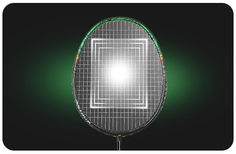
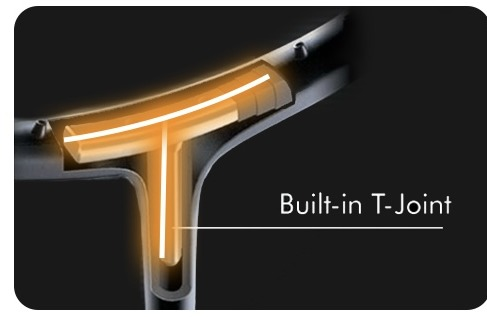
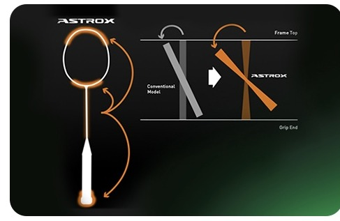
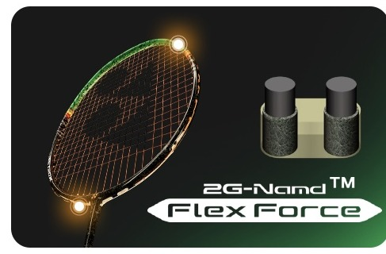
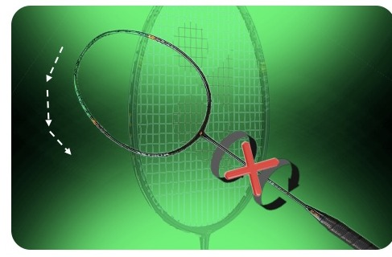
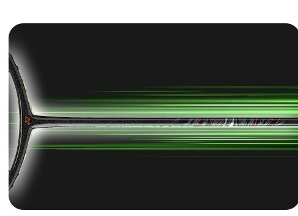
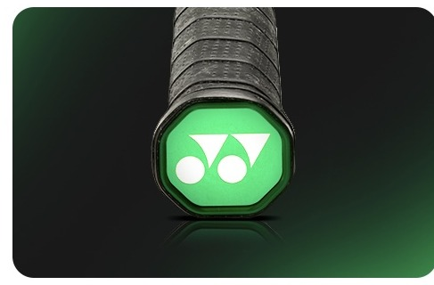

ISOMETRIC아이소메트릭
아이소메트릭 기술은 라켓 헤드의 프레임 형태를 정사각형에 가까운 형태로 디자인하여 스위트 스팟(Sweet Spot)*을 넓히는 기술입니다. 일반적인 타원형 프레임보다 더 넓은 면적에서 안정적인 타구가 가능하게 만들어 더 높은 컨트롤과 일관된 샷 성능을 제공합니다.
* 스위트 스팟(Sweet Spot) : 라켓에서 가장 효과적으로 공을 타격할 수 있는 최적의 영역

Built-In-T-Joint내장형 T-조인트
프레임과 샤프트가 만나는 그라파이트* 층 깊숙이 내장된 내장형 T-조인트는 견고하고 뒤틀림이 없는 강한 일체형 프레임을 제공합니다.
* 그라파이트(Graphite) : 탄소 섬유를 기반으로 만든 고강도, 경량 소재

Enhanced
Rotational Generator System
그립 엔드, 프레임 상단, 그리고 조인트 전체에 무게가 분산되어 강력한 공격을 지속할 수 있습니다. 파워 어시스트 범퍼는 라켓에 완벽하게 밀착되어 공기 저항을 줄이고 프레임 상단의 무게를 증가시켜 셔틀콕으로의 파워 전달을 향상시킵니다.

2Gen-Namd* Flex Force
2G-Namd Flex Force는 빠른 플렉스와 스냅백 기능을 특징으로 하는 새로운 그라파이트입니다. 그라파이트를 결합하는 탄소 나노튜브는 에너지 손실을 줄이고 탄력성을 향상시킵니다.
* Namd : 닛타(Nitta) 주식회사가 탄소 섬유 복합재에 탄소 나노튜브를 균일하게 분산시키기 위해 개발한 기술입니다.

Shot Information Connector
샤프트와 엔드캡의 무게를 줄임으로써 라켓 헤드에 더 많은 무게가 집중되어 플렉스가 향상됩니다. 동시에 고강성 그라파이트로 제작된 안티 토션 샤프트(ANTI TORSION SHAFT)는 토크*를 줄이고 라켓 페이스의 안정성을 유지하는 데 도움을 줍니다. 이러한 디자인은 셔틀콕과 스트링의 접촉 시간을 늘려 더 많은 샷 정보를 명확하게 전달하고 모든 샷에서 플레이어에게 더 큰 자신감을 제공합니다.
* 토크 : 물체를 회전시키는 힘의 크기를 나타내는 물리량

Ultra Slim Shaft
요넥스의 울트라 슬림 샤프트는 가장 얇은 샤프트 설계로 공기 저항을 최소화해 스윙 속도와 조작성을 높여줍니다. 고탄성 카본을 사용해 강한 반발력을 발휘하여 스매시와 드라이브에서 더욱 빠르고 날카로운 타구가 가능합니다.

Lightweight End CAP
내부 무게를 제거하여 디자인된 엔드캡은 무게 균형을 라켓 헤드쪽으로 이동시켜 보다 더 특징적인 헤드 헤비 라켓의 기능을 구현하였습니다.